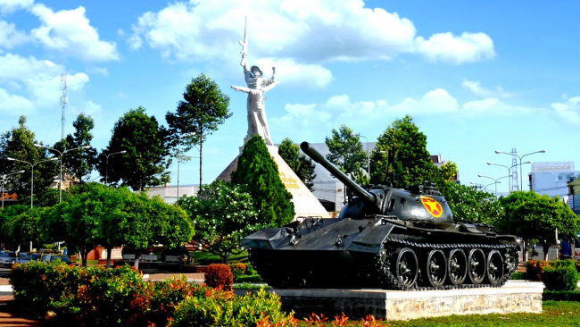
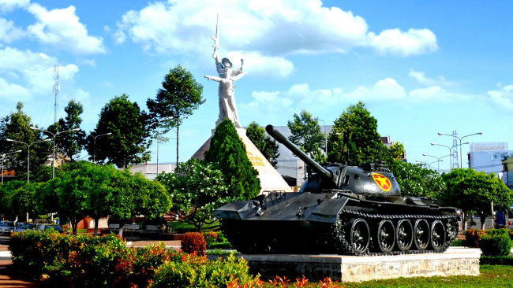

About Our Hometown
Welcome to the About page where you can learn more about the history and culture of our charming town. Feel free to explore and discover what makes our hometown special.
Welcome to the About page where you can learn more about the history and culture of our charming town. Feel free to explore and discover what makes our hometown special.
Long Khánh is a beautiful city located in the Đồng Nai province of Vietnam. With its strategic location, friendly community, and diverse economy, it offers a unique blend of urban convenience and natural beauty.
Long Khánh has a fascinating history that dates back many centuries. Originally inhabited by indigenous communities, the area later became an important trading hub due to its strategic location along major trade routes.
In the 19th century, Long Khánh experienced significant growth and development under the rule of various dynasties. It served as a center of commerce, culture, and administration, attracting merchants, artisans, and scholars from neighboring regions.
During the colonial era, Long Khánh played a crucial role in the struggle for independence, with local residents actively participating in anti-colonial movements and resistance efforts.
Following Vietnam's independence, Long Khánh underwent rapid modernization and urbanization, transforming into the thriving city it is today. Despite the changes, the city has managed to preserve its rich cultural heritage and traditional values.
The culture of Long Khánh is a vibrant tapestry woven from the diverse traditions of its inhabitants. From colorful festivals and religious ceremonies to traditional crafts and culinary delights, the city's cultural heritage is celebrated and cherished by its residents.
Visitors to Long Khánh can immerse themselves in the local culture by exploring historic temples, participating in traditional dance performances, or sampling delicious street food at bustling markets.
Located in the Đồng Nai province of Vietnam, Long Khánh is blessed with picturesque landscapes and natural beauty. The city is surrounded by lush greenery, rolling hills, and winding rivers, offering breathtaking views and outdoor recreational opportunities.
Notable landmarks in Long Khánh include ancient pagodas, historic sites, and architectural marvels that reflect the city's rich history and cultural heritage. Whether you're exploring the bustling city center or venturing into the tranquil countryside, there's always something new to discover in Long Khánh.
Join us as we celebrate the beauty, history, and culture of Long Khánh, and embark on a journey to uncover the hidden treasures of our beloved hometown!
Our mission is to promote and celebrate the beauty and culture of Long Khánh while supporting the local community and businesses, providing visitors and residents alike with valuable information about its historical significance, local attractions, upcoming events, and thriving businesses.

Founder & CEO
Content Manager
Web Developer
Marketing Coordinator
Explore our website to discover all that Long Khánh has to offer, and join us in celebrating the beauty and charm of our hometown!
Want to connect? Contact Us